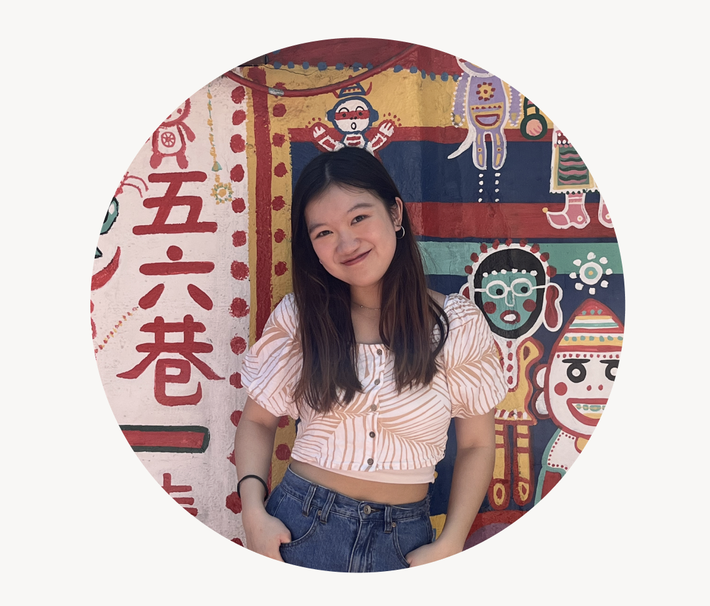
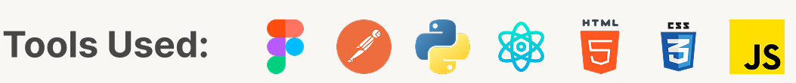
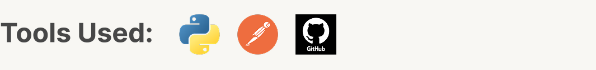
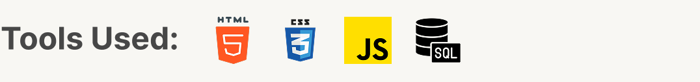
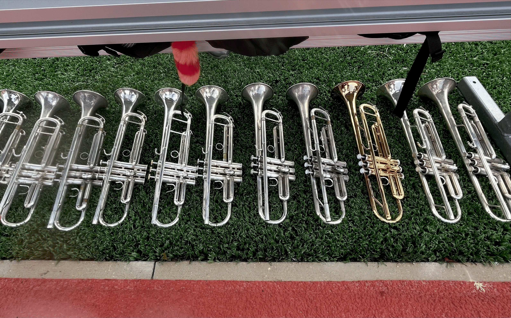

About Me

OpenHCI Workshop
I participated in this student-led extracurricular workshop focused on human-computer interaction in Taiwan to design a project focusing on "cross-device attention" with students from different backgrounds.

Vision Intelligence Intern
I worked as Vision Intelligence intern in Industrial Technology Research Institute, Taiwan’s leading national institute for applied industrial R&D, focusing on using Imitation Learning to train a robotic cooking assistant.

Software QA Intern
I worked as a software quality assurance intern in AsiaYo, an online travel agency offering hotel booking around Asia. Our team focus on API test automation ensure feature quality and user experience consistency.

National Tsing Hua University
Bachelor in Computer Science and Innovative Design Program, which consists of seven courses, such as "User-center Design", "Introduction to Psychology", and "Sketching for Product Design".
Harvard CS50
I have gained my knowledge on computer science and also web programming through a series of online courses, like "Data Structure", "SQL", "HTML, CSS, and JS", offered by Havard University.

Interest

Marching Band
Being part of a marching band taught me how individual actions come together to create a shared experience. Through long rehearsals and performances, I learned the importance of pushing through challenges, adapting to unexpected situations. More than anything, it showed me that teamwork is built on trust and communication, listening to others, adjusting myself, and moving forward together.

Trumpet Playing
As a trumpet player for over ten years, performing in front of audiences strengthened my self-confidence and stage presence, while teaching me how to channel nervous energy and pressure into focus. Continuous practice pushed me to keep improving as an individual, always seeking toward perfection. Music also serves as a personal form of creative expression, allowing me to communicate emotions and ideas beyond words.

Travel & Video Editing
Travel allows me to experience new environments and meet people from different backgrounds, deepening my appreciation for diverse cultures and landscapes while gaining fresh perspectives. Video editing complements this by letting me document my life through visual storytelling, helping me refine my sense of design, narrative, and attention to detail.